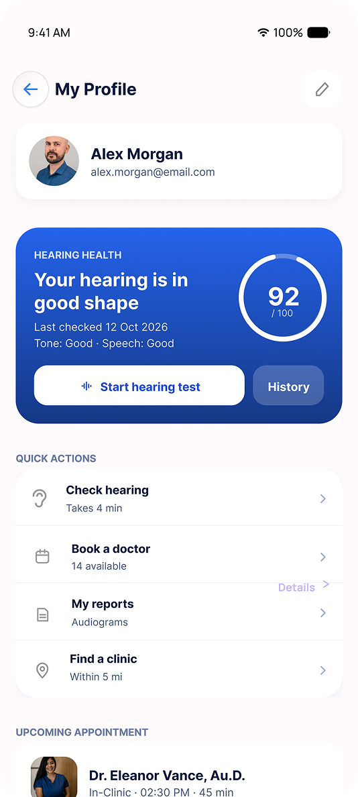
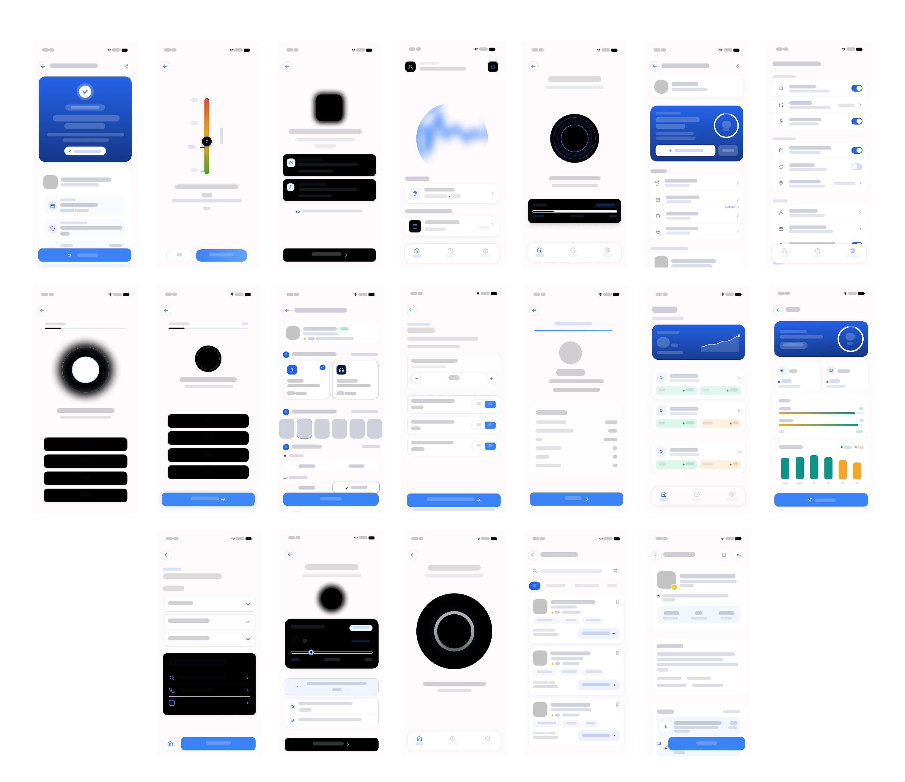
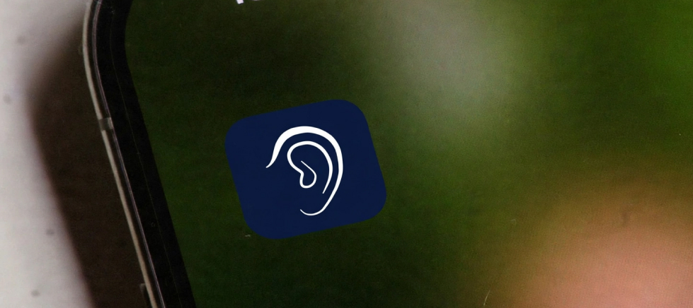
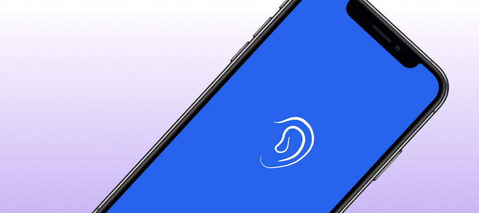
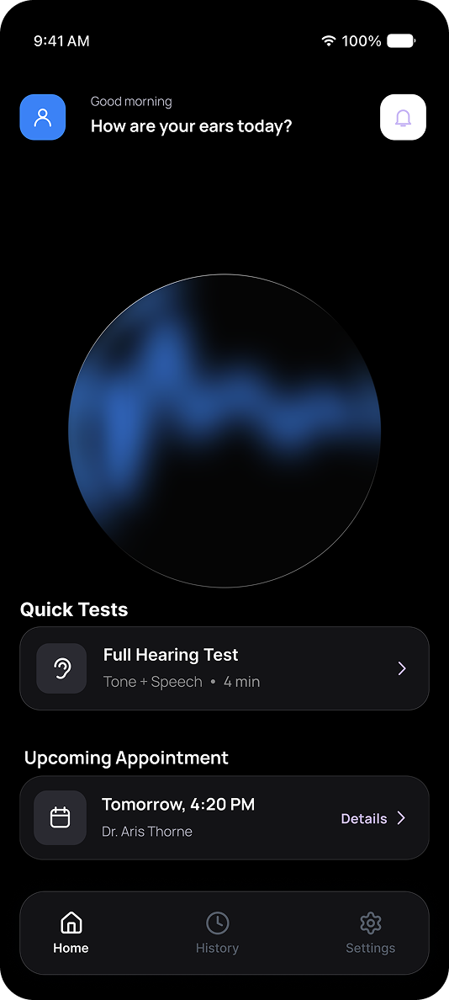
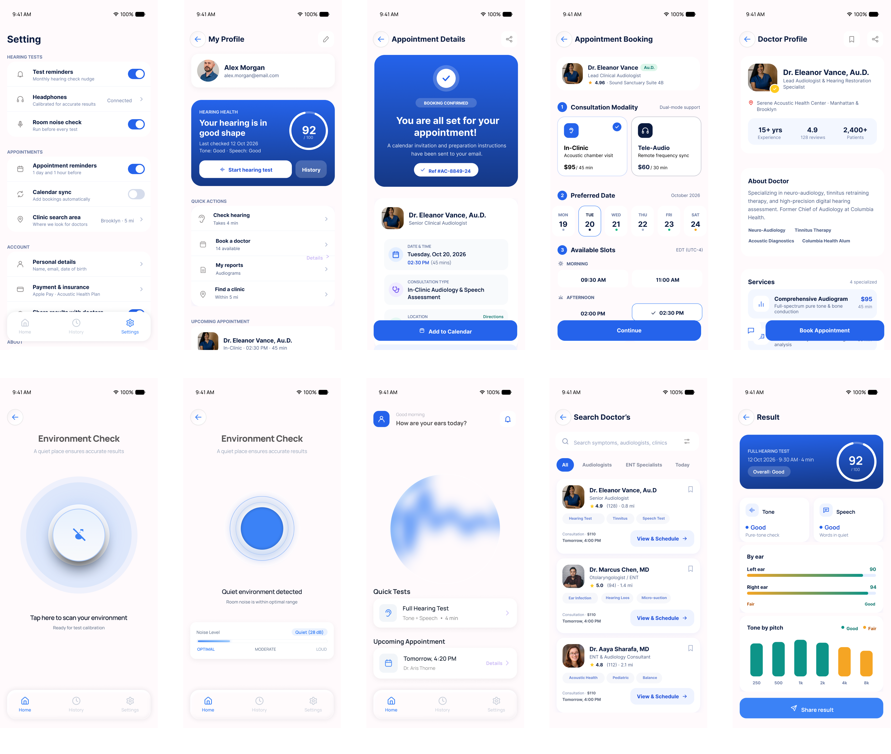

INTRO
Hearing App Design
I designed a hearing health app that allows users to test their hearing levels and book appointments with doctors. The project focused on making hearing assessments simple and accessible, helping users understand their hearing health and easily schedule a consultation for professional care.
PROBLEM
1. Users sometimes receive inaccurate or inconsistent results.
2. Users struggle to understand the process and what to do with all the information provided.
SOLUTION
1. Accurate & Shareable Results – I designed an app that provides accurate results, allowing users to share them and book a doctor.
2. Simple Design & Interactions – I made the design and interactions easy to understand, helping users navigate the app with confidence.
3. Immediate Doctor Booking – I added a feature that lets users view all available information about a doctor and book an appointment immediately.
PROFILE SCREEN
This is the user profile and settings screen. Users can manage their personal details, update preferences, book doctor appointments, and check their medical reports—all in one place.

WIREFRAME
Each page of this doctor app wireframe has been carefully designed based on the research and information I gathered. These insights shaped the layout, navigation, and content hierarchy, keeping user needs at the heart of every design. The result is a clear, intuitive experience that helps users find the care they need with confidence.

DESIGN SYSTEM
This design system includes fonts, a logo, a logo screen on a phone, and a few components.


BLACK AND WHITE THEME
I have designed the app in two themes: black and white.

UI SCREENS
Research, user feedback, and competitive analysis informed our final design. The flow maps the journey from Home, Hearing Testing, and Booking, showing how the app’s screens and features connect.
